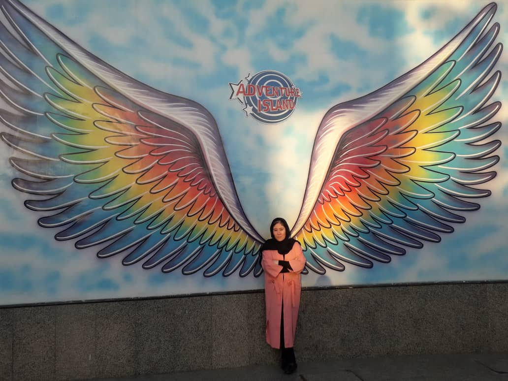

Welcome to my personal webpage! Here, you'll find a reflection of my passions, experiences, and creative endeavors. This space serves as a digital portfolio showcasing my work, achievements, and interests, ranging from [your hobbies or professional skills, e.g., graphic design, photography, writing, or coding] to my latest projects and thoughts. I believe in the power of sharing knowledge and connections, so feel free to explore, interact, and reach out. Thank you for visiting, and I hope you enjoy your stay!
One of my favourite quotes is: “Even the smallest person can change the course of the future.” This quote reminds me that however small we think our efforts, no matter how insignificant we may think we are, we are all, in fact, important. Our actions/deeds/words matter and we can and do contribute to the world around us. So let's all use our power wisely and for the greater good. Let's improve, build, and create. Let's be positive change for everyone.
